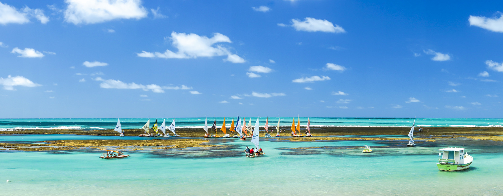
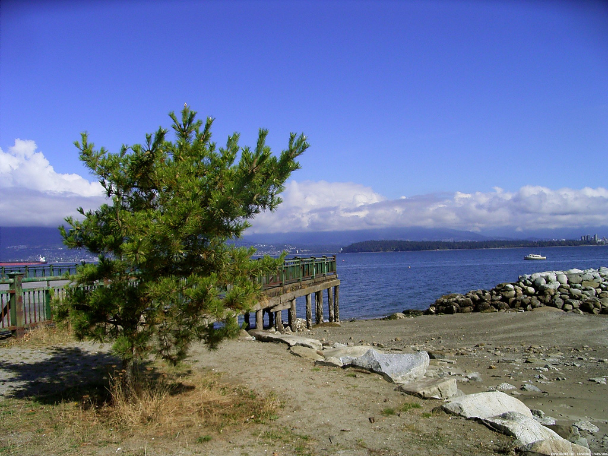
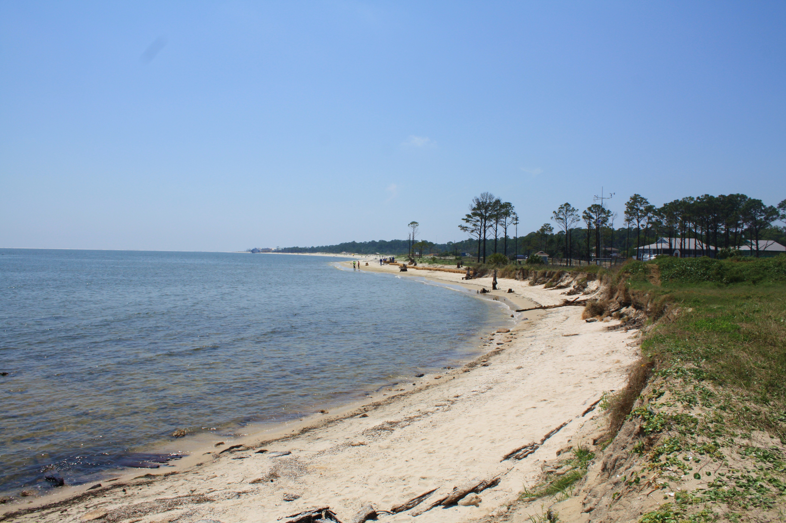
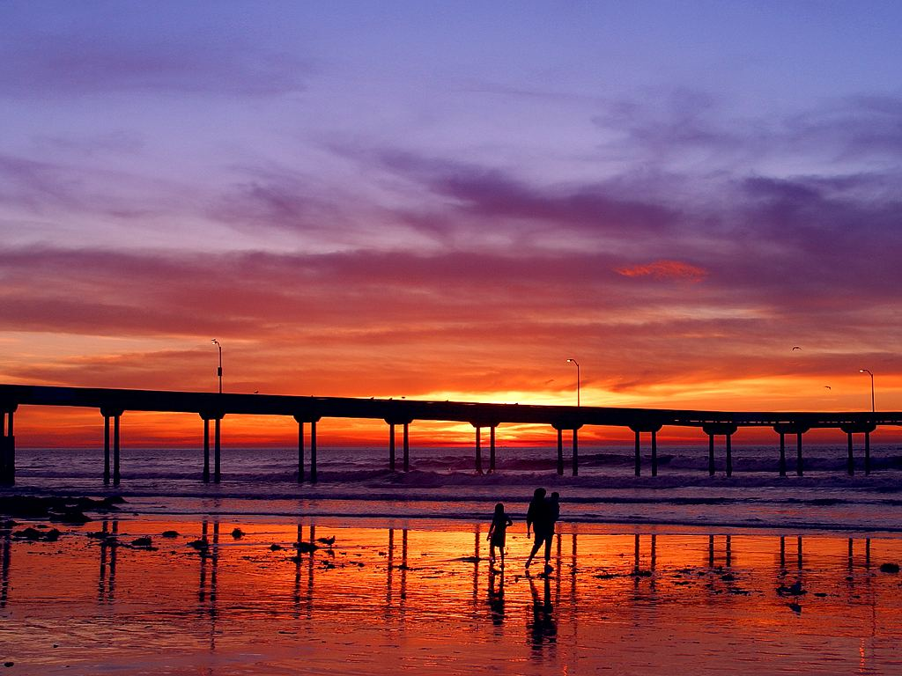
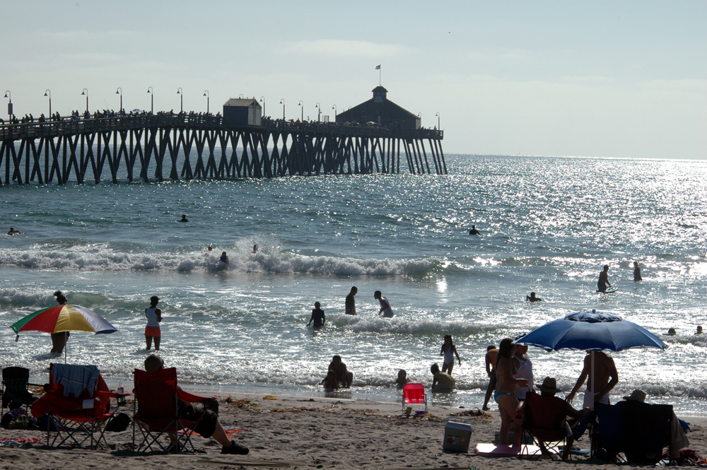

Brazilian beaches
Porto de Galinhas
Porto de Galinhas is a beach in the municipality of Ipojuca, Pernambuco, Brazil. Porto de Galinhas is a major tourist destination.
Porto da Barra

Porto da Barra Beach is located in Barra neighborhood in the city of Salvador, Brazil.
Jericoacoara

Jericoacoara is a virgin beach hidden behind the dunes of the west coast of Jijoca de Jericoacoara, Ceará, Brazil.
Canadian beaches
Jericho Beach
Jericho Beach, known originally as iy'a'l'mexw in Squamish, a Vancouver beach, is located west of the seaside neighbourhood of Kitsilano.
English Bay

English Bay is an open bay northwest of the Burrard Peninsula in British Columbia, Canada.
Rathtrevor Beach Provincial Park

Rathtrevor Beach Provincial Park is a provincial park in Parksville, British Columbia, Canada.
United States beaches
Dauphin Island
Dauphin Island is an island town in Mobile County, Alabama, United States, on a barrier island of the same name, in the Gulf of Mexico.
Ocean Beach
Ocean Beach (also known as O.B.) is a beachfront neighborhood of San Diego, California.
Imperial Beach
Imperial Beach is a residential beach city in San Diego County, California, with a population of 26,324 at the 2010 census.